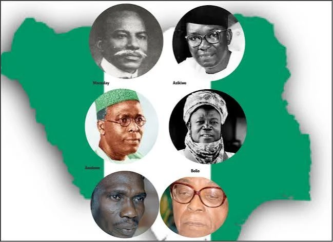

Weather

Temperature: 30°C
Wind speed: 15 km/h
Wind chill: N/A
Data
- Area: Approximately 923,768 square kilometers
- Population: Over 213 million
- Capital: Abuja
- Language: English
- Currency: Nigerian Naira (NGN)
- Timezone:West Africa Time (WAT), UTC +01:00
- Calling Code: +234
- InternetTLD .ng